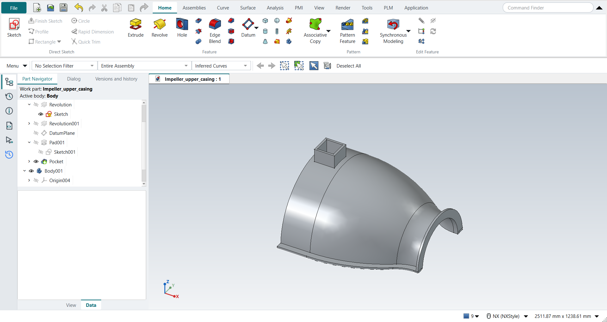

Tutorial AX: Impeller Upper Casing
| Source |
Ming C. Leu, Wenjin Tao, Amir Ghazanfari and Krishna Kolan, NX 12 for Engineering Design (Missouri University of Science and Technology), exercise 4.10.3 (Impeller Upper Casing). It starts from the lower casing of tutorial AO. |
| You learn |
Edit Parameters of a Revolve and of an Extrude, a Datum Plane at an offset, a sketch on it, Extrude with Unite, Extrude (Subtract) of some of a sketch’s curves, Show |
| Sizes |
the lower casing’s, in inches, typed in millimetres. The manhole is ours (see below). |
The book gives the upper casing the lower casing’s dimensions and leaves the manhole to the reader: it should be big enough to see the impeller blades and to put a hand inside to clean it. Here it is a square tube 5 × 5 in with 0.5 in walls, its top 3 in above the casing (z = 18 in), over the middle of the wall’s straight part, and a 4 × 4 in opening through the wall. The tube ends in the middle of the wall’s thickness (z = 14.75 in): ending it on the wall’s inner face would leave a tangent contact that the Unite cannot make.
The replay runs tutorials AG and AO first and starts from the part AO saved.
Step by step
1. The lower casing, turned over
Open Impeller_lower_casing and save it as Impeller_upper_casing.
Select the wall’s Revolve in the Part Navigator and click Edit Parameters. Keep Start 0, type End −180, and click OK: the wall is now above the split plane. Do the same for the flange’s Revolve.
Select the edge’s Extrude, click Edit Parameters, untick Reversed in FreeCAD’s panel and click OK. The edge now runs up from the split plane, and its mirrored copy follows by itself.
2. The manhole
Select the XC-YC plane in the Part Navigator and choose Datum > Datum Plane. Type 457.2 mm (18 in) in the offset along Z and press MB2. Select the datum plane and click Sketch. Draw two squares with Rectangle (R), both centred over the middle of the wall’s straight part: 5 × 5 in and 4 × 4 in. Then Ctrl+Q.
Click Extrude, click a side of a square, choose Unite, and type 82.55 mm (3.25 in). Tick Reversed so that it runs down to the casing, then click OK: the tube.
FreeCAD hides a sketch once an Extrude uses it, and a hidden curve cannot be picked. Select the sketch in the Part Navigator and click Show (View tab). Click Extrude (Subtract), set the Curve Rule to Single Curve and pick the inner square’s four lines; QuickPick lists them where they lie on the tube. Type 127 mm (5 in) and click OK: the opening through the wall.

Save the part.
The replay
| # | In the book (NX) | In FreeCAD NX-Style | Result | Notes |
|---|---|---|---|---|
AX1 |
Open the lower casing and save it as Impeller_upper_casing |
File > Open (by script); file name given once by script (the system file dialog is not driven); a change, then the Ctrl+S key |
same |
tutorial AO’s part, its wall and flange revolved and its edges; Impeller_upper_casing.FCStd rewritten by Ctrl+S: the file holds the change and the part is unmodified afterwards (modified before the key: True); FreeCAD format, not .prt |
AX2 |
Edit Parameters of the wall’s Revolve: End -180, above the split plane |
the Revolve selected (Part Navigator) + ribbon 'Home › Edit Feature > Edit Parameters' (box open True), Start 0 and End -180 typed (limits (0.0, -180.0)), OK clicked |
same |
same solid as the reference: 0 mm³ differ, box within 0 mm, 12 faces (12 in the reference) |
AX3 |
Edit Parameters of the flange’s Revolve: End -180 |
the Revolve selected (Part Navigator) + ribbon 'Home › Edit Feature > Edit Parameters' (box open True), Start 0 and End -180 typed (limits (0.0, -180.0)), OK clicked |
same |
same solid as the reference: 0 mm³ differ, box within 0 mm, 14 faces (14 in the reference) |
AX4 |
Edit Parameters of the edge’s Extrude: along +ZC; its mirror follows |
the edge’s Extrude selected + ribbon 'Home › Edit Feature > Edit Parameters', Reversed True → False (clicked), OK clicked |
same |
same solid as the reference: 0 mm³ differ, box within 1.9e-13 mm, 24 faces (24 in the reference) |
AX5 |
Datum Plane 18 above the XC-YC plane (the manhole’s top) |
the XY plane selected (Part Navigator) + ribbon 'Home > Datum > Datum Plane', 'attachmentOffsetZ' = 457.2 mm, MB2 = OK |
same |
plane at z = 457.2 mm |
AX6 |
Sketch the manhole: two squares, 5 x 5 and 4 x 4, over the wall’s straight part |
the datum plane + ribbon 'Home › Direct Sketch > Sketch'; R key (tool True), first corner typed, opposite corner typed as length, width, MB2; then R key (tool True), first corner typed, opposite corner typed as length, width, MB2 |
same |
8 lines, corners as planned; centred at x = -109.71 mm, the middle of Line 1 (the book leaves the manhole’s size to the reader) |
AX7 |
Extrude both squares 3.25 down into the casing, Unite |
ribbon 'Home › Feature > Extrude', a side picked (QuickPick; Curve Rule Inferred Curves), dialog opened True; Boolean 'Unite', 'lengthEdit' = 82.55 mm, Reversed clicked (True); OK clicked |
same |
same solid as the reference: 0 mm³ differ, box within 0 mm, 24 faces (24 in the reference) |
AX8 |
Extrude (Subtract) the inner square through the wall |
the sketch shown again (Ctrl+Shift+K: True); ribbon 'Home › Feature > Extrude (Subtract)', Curve Rule 'Single Curve', the 4 inner lines picked (QuickPick, QuickPick, QuickPick, QuickPick), 'lengthEdit' = 127 mm, OK clicked |
same |
same solid as the reference: 0 mm³ differ, box within 0 mm, 23 faces (23 in the reference) |
AX9 |
The upper casing with its manhole |
compared with the book’s curves and the manhole by the Part API |
same |
same solid as the reference: 0 mm³ differ, box within 0 mm, 23 faces (23 in the reference) |
AX10 |
Save the part |
file name given once by script (the system file dialog is not driven); a change, then the Ctrl+S key |
same |
Impeller_upper_casing.FCStd rewritten by Ctrl+S: the file holds the change and the part is unmodified afterwards (modified before the key: True); FreeCAD format, not .prt |
| Result | Means |
|---|---|
same |
The book’s NX steps work as written. |
differs |
It works, but the FreeCAD way is different; the notes say how. |
limit |
The book’s way fails in FreeCAD itself; a workaround follows in the next steps. |
missing |
FreeCAD has no such function; a stand-in follows. |
skipped |
Not replayed; the notes give the reason. |
FAILED |
Did not work. |
Each step is compared with FreeCAD’s Part API build of the book’s curves and the manhole.
What differs from NX
-
NX keeps a sketch visible after an Extrude uses it; FreeCAD hides it, so it has to be shown again before its curves can be picked.
-
Right after a selection, Ctrl+Shift+K (NX’s Show) and Ctrl+B (Hide) did nothing in the replay until FreeCAD had updated its commands (about 1.5 s); the View tab’s Show button worked at once. Both keys now work right after a pick (PR #36); the replay still uses the button.